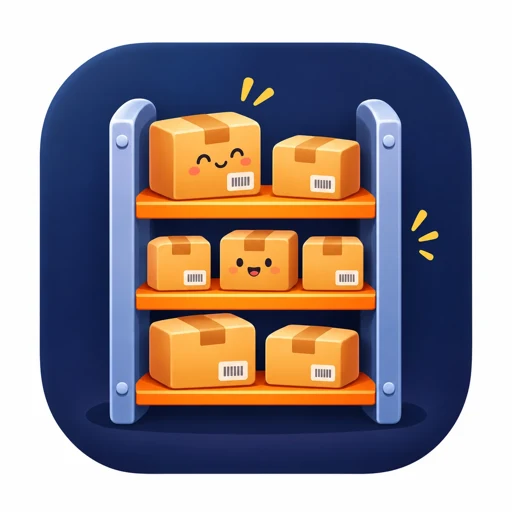
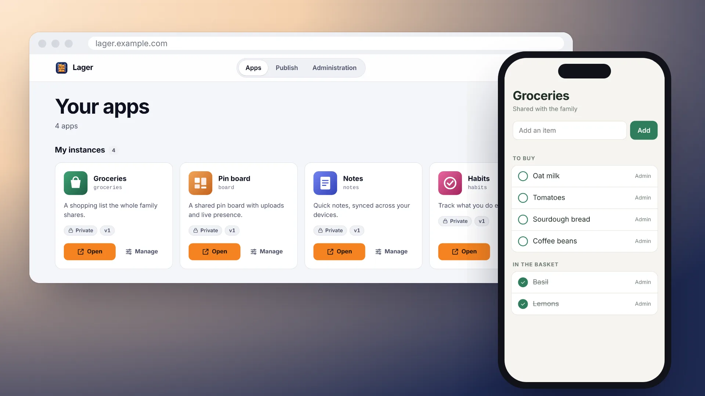

Open source · Self-hostedYour AI builds the app.
Lager keeps it.
Ask Claude, ChatGPT or any other assistant for a small app. Lager puts it on your own server, with its own address, its own data and a link you can share.
$ curl -fsSL https://raw.githubusercontent.com/dm807cam/lager/main/install.sh | sudo bash
Linux server or Raspberry Pi. Run it again to update.

From a sentence to a link
An app from a chat usually stays in the chat. With Lager it gets a home.
Connect once
Add your Lager address to your assistant as a connector. You sign in, and that's it.
Ask for an app
Describe what you need. Your assistant writes it and puts it on Lager.
Open the link
It works in any browser and on the home screen of your phone. Share it with whoever needs it.
Small, but it has what apps need
The things that usually stand between a chat and a real app.
Data that stays
Every app has its own database with live updates and file uploads, so it keeps its state across devices and people.
Versions you can undo
Every deploy is numbered. Lager takes a snapshot of the data before it switches, so you can always go back.
Share with anyone
Everyone in one shared copy, or a copy each. The people you share with need a browser, not an AI subscription.
Any assistant
Claude, ChatGPT, Cursor, VS Code, Gemini CLI: anything that speaks MCP can build and deploy, and the apps run the same.
Your model, your limits
Apps can ask a language model you connect, from Anthropic and OpenAI to a local Ollama. You decide who uses which, and how often.
Small and yours
One Node.js process, SQLite and a folder. No telemetry, no other services. Happy on a Raspberry Pi.
Ideas for your Lager
Small things that are useful because they are yours and everyone can reach them.
Five minutes on a Raspberry Pi
One command sets up Docker if needed, asks three short questions and starts Lager.
$ curl -fsSL https://raw.githubusercontent.com/dm807cam/lager/main/install.sh | sudo bash
- https on your own domain through Cloudflare, without opening ports
- Running it again updates Lager and takes a backup first
- Raspberry Pi 3, 4, 5 and Zero 2, and any 64-bit Linux server
Prefer Docker Compose or your own reverse proxy? Read the installation guide.